চিত্রের সাহায্যে ভগ্নাংশ বোঝা
উৎস-অনুগত সম্পূর্ণ মডিউল · A00 / m81285। সম্পূর্ণ বইয়ের অনুবাদ এখনও চলছে। গণিত, প্রশ্ন, উপস্থিত সমাধান, মূল পরিচয়চিহ্ন ও ছবি সংরক্ষিত। সূত্রের শব্দলেবেল ও ছবি-বিবরণ বাংলায় অনূদিত। যেসব প্রশ্নের উত্তর মূল উৎসে নেই, এখানে সেগুলিতে নতুন উত্তর যোগ করা হয়নি। মূল ছবিতে থাকা ভুল/ইংরেজি লেবেলের ক্ষেত্রে বাংলা বিবরণ ও সম্পাদকীয় সতর্কতা পড়ো। স্বাধীন বাংলা ভাষা/শিক্ষক, শিক্ষার্থী ও সহায়ক-প্রযুক্তি পর্যালোচনা বাকি। বাইরের উৎস-লিঙ্কে ইন্টারনেট প্রয়োজন।
এই পাঠের শেষে তুমি পারবে:
- ভগ্নাংশের অর্থ বুঝতে
- মডেলের সাহায্যে অপ্রকৃত ভগ্নাংশ ও মিশ্র ভগ্নাংশ বোঝাতে
- অপ্রকৃত ভগ্নাংশ ও মিশ্র ভগ্নাংশের পারস্পরিক রূপান্তর করতে
- মডেলের সাহায্যে সমতুল ভগ্নাংশ বোঝাতে
- সমতুল ভগ্নাংশ নির্ণয় করতে
- সংখ্যারেখায় ভগ্নাংশ ও মিশ্র ভগ্নাংশের অবস্থান দেখাতে
- ভগ্নাংশ ও মিশ্র ভগ্নাংশকে ছোটো থেকে বড়ো বা বড়ো থেকে ছোটো ক্রমে সাজাতে
ভগ্নাংশের অর্থ বোঝা
অ্যান্ডি ও ববি পিৎজা খেতে ভালোবাসে। সোমবার রাতে তারা একটি পিৎজা সমান ভাগ করে নিল। প্রত্যেকে পিৎজার কতটা পেল? তুমি কি ভাবছ, প্রত্যেকে অর্ধেক পিৎজা পেয়েছে? ঠিক তাই। একটি গোটা পিৎজাকে সমান দু-ভাগে ভাগ করা হয়েছে; প্রত্যেকে ওই দুটি সমান ভাগের একটি পেয়েছে।
গণিতে লিখে দুটি সমান ভাগের একটি বোঝাই।
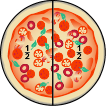
একটি গোল পিৎজা মাঝখান দিয়ে লম্বালম্বি কেটে সমান 2 ভাগ করা হয়েছে। প্রতিটি ভাগের চিহ্নিত ভগ্নাংশে লব 1, হর 2।
মঙ্গলবার অ্যান্ডি ও ববি তাদের বাবা-মা ফ্রেড ও ক্রিস্টির সঙ্গে একটি পিৎজা ভাগ করে নিল। প্রত্যেকে গোটা পিৎজার সমান অংশ পেল। প্রত্যেকের ভাগে পিৎজার কতটা পড়ল? একটি গোটা পিৎজা সমান চার ভাগে ভাগ করা হয়েছে। প্রত্যেকে ওই চারটি সমান ভাগের একটি পেয়েছে; অর্থাৎ পিৎজার অংশ পেয়েছে।
একটি গোল পিৎজা মাঝখান দিয়ে লম্বালম্বি ও আড়াআড়ি কেটে সমান 4 ভাগ করা হয়েছে। প্রতিটি ভাগের চিহ্নিত ভগ্নাংশে লব 1, হর 4।
বুধবার পরিবারটি কয়েকজন বন্ধুকে রাতে পিৎজা খাওয়ার জন্য নিমন্ত্রণ করল। সব মিলিয়ে জন। তারা একটি পিৎজা সমান ভাগ করে নিলে প্রত্যেকে পিৎজার অংশ পাবে।
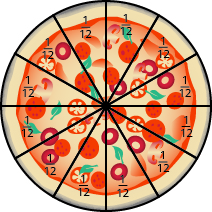
একটি গোল পিৎজা সমান 12 ভাগে কাটা। প্রতিটি ভাগের চিহ্নিত ভগ্নাংশে লব 1, হর 12।
ভগ্নাংশ দিয়ে একটি সমগ্রের অংশ বোঝানো যায়। হর বোঝায়, গোটা বস্তুটিকে মোট কতটি সমান ভাগে ভাগ করা হয়েছে; আর লব বোঝায়, তার মধ্যে কতটি ভাগ নেওয়া হয়েছে। হর শূন্য হতে পারে না, কারণ শূন্য দিয়ে ভাগ সংজ্ঞায়িত নয়।
চিত্র [CNX_BMath_Figure_04_01_004]-এ বৃত্তটিকে সমান মাপের তিন ভাগে ভাগ করা হয়েছে। প্রতিটি ভাগ বৃত্তটির অংশ বোঝায়। এই ধরনের মডেলকে ভগ্নাংশের বৃত্ত বলা হয়। আয়তক্ষেত্রের মতো অন্য আকার দিয়েও ভগ্নাংশের মডেল তৈরি করা যায়।
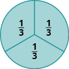
একটি বৃত্ত সমান 3 ভাগে বিভক্ত। প্রতিটি ভাগের চিহ্নিত ভগ্নাংশে লব 1, হর 3।
এই ভগ্নাংশটি কী বোঝায়? এই ভগ্নাংশের অর্থ তিনটি সমান ভাগের দুটি।
একটি বৃত্ত সমান 3 ভাগে বিভক্ত। তার মধ্যে 2টি ভাগ রঙ করা।
অনুশীলন · এই প্রশ্নের লিঙ্ক
প্রতিটি চিত্রে আকারটির যে অংশ রঙ করা আছে, তাকে ভগ্নাংশ দিয়ে প্রকাশ করো।
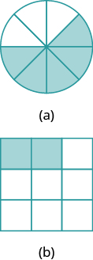
(a) অংশে একটি বৃত্ত সমান 8 ভাগে বিভক্ত; 5টি ভাগ রঙ করা। (b) অংশে একটি বর্গক্ষেত্র সমান 9 ভাগে বিভক্ত; 2টি ভাগ রঙ করা।
সমাধান
আমাদের দুটি প্রশ্ন করতে হবে। প্রথমত, মোট কতটি সমান ভাগ আছে? এই সংখ্যাটি হবে হর। দ্বিতীয়ত, ওই সমান ভাগগুলির মধ্যে কতটি রঙ করা আছে? এই সংখ্যাটি হবে লব।
ⓐ
আটটি সমান ভাগের মধ্যে পাঁচটি রঙ করা। তাই বৃত্তটির রঙ করা অংশের ভগ্নাংশ হল
ⓑ
নয়টি সমান ভাগের মধ্যে দুটি রঙ করা। তাই বর্গক্ষেত্রটির রঙ করা অংশের ভগ্নাংশ হল
অনুশীলন · এই প্রশ্নের লিঙ্ক
বৃত্তটির অংশ রঙ করো।
একটি বৃত্তের রেখাচিত্র; ভিতরে কোনও ভাগ বা রঙ করা অংশ নেই।
সমাধান
হর হল তাই বৃত্তটিকে সমান চার ভাগে ভাগ করি। দেখো ⓐ।
লব হল তাই ওই চারটি ভাগের তিনটি রঙ করি। দেখো ⓑ।
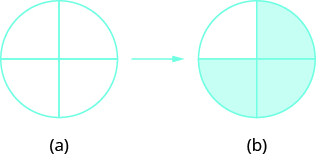
(a) অংশে একটি বৃত্ত সমান 4 ভাগে বিভক্ত। একটি তিরচিহ্ন (a) থেকে (b)-এর দিকে গেছে। (b) অংশে সেই বৃত্তের 3টি ভাগ রঙ করা।
বৃত্তটির অংশ রঙ করা আছে।
উদাহরণ [fs-id1257167] ও উদাহরণ [fs-id2436750]-এ বৃত্ত ও আয়তক্ষেত্র দিয়ে ভগ্নাংশের মডেল তৈরি করেছি। হাতে সাজানো যায় এমন ভগ্নাংশের পাত দিয়েও মডেল তৈরি করা যায়; দেখো চিত্র [CNX_BMath_Figure_04_01_014]। এখানে একটি লম্বা, অবিভক্ত আয়তাকার পাত দিয়ে এক গোটা বোঝানো হয়েছে। তার নীচে একই দৈর্ঘ্যের পাত রয়েছে; প্রতিটি পাতকে সমান মাপের ভাগে ভাগ করা হয়েছে, কিন্তু পাতভেদে ভাগের সংখ্যা আলাদা।
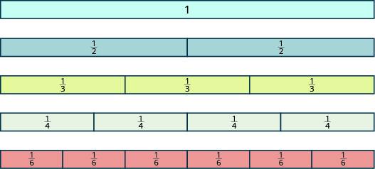
প্রথমে একটি লম্বা, অবিভক্ত আয়তাকার পাত; তার উপরে লেখা 1। নীচের সারিগুলির পাতের দৈর্ঘ্য ও আকার একই। দ্বিতীয় সারির পাত সমান 2 ভাগে বিভক্ত; প্রতিটি ভাগে লেখা ভগ্নাংশের লব 1, হর 2। তৃতীয় সারির পাত সমান 3 ভাগে বিভক্ত; প্রতিটি ভাগে লব 1, হর 3। চতুর্থ সারির পাত সমান 4 ভাগে বিভক্ত; প্রতিটি ভাগে লব 1, হর 4। শেষ সারির পাত সমান 6 ভাগে বিভক্ত; প্রতিটি ভাগে লব 1, হর 6।
এবার ভগ্নাংশের পাত ব্যবহার করে ভগ্নাংশের কয়েকটি মূল বিষয় বুঝে নেব। চিত্র [CNX_BMath_Figure_04_01_014] দেখে নীচের প্রশ্নগুলির উত্তর দাও:
| একটি গোটা পাত তৈরি করতে মাপের কতগুলি পাত লাগবে? | দুটি অর্ধেক পাত মিলে একটি গোটা পাত হয়। তাই দুটি ভাগের দুটিই নিলে পাই |
| একটি গোটা পাত তৈরি করতে মাপের কতগুলি পাত লাগবে? | তিনটি এক-তৃতীয়াংশ মিলে একটি গোটা হয়। তাই তিনটি ভাগের তিনটিই নিলে পাই |
| একটি গোটা পাত তৈরি করতে মাপের কতগুলি পাত লাগবে? | চারটি এক-চতুর্থাংশ মিলে একটি গোটা হয়। তাই চারটি ভাগের চারটিই নিলে পাই |
| একটি গোটা পাত তৈরি করতে মাপের কতগুলি পাত লাগবে? | ছয়টি এক-ষষ্ঠাংশ মিলে একটি গোটা হয়। তাই ছয়টি ভাগের ছয়টিই নিলে পাই |
| গোটা পাতটিকে টি সমান ভাগে ভাগ করলে কী হবে? (এটি বোঝানোর পাত এখানে দেখানো হয়নি; মনে মনে ছবিটি ভাবার চেষ্টা করো।) একটি গোটা পাত তৈরি করতে মাপের কতগুলি পাত লাগবে? | লাগবে টি এক-চব্বিশাংশ। তাই |
এক গোটা তৈরি করতে লাগে টি এক-চব্বিশাংশ। তাই
এ থেকে পাই একের ধর্ম।
অনুশীলন · এই প্রশ্নের লিঙ্ক
ভগ্নাংশের বৃত্তের নীচের টুকরোগুলি সাজিয়ে গোটা বৃত্ত তৈরি করো:
- ⓐ টি এক-চতুর্থাংশ
- ⓑ টি এক-পঞ্চমাংশ
- ⓒ টি এক-ষষ্ঠাংশ
সমাধান
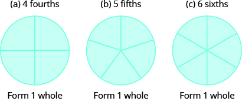
তিনটি বৃত্ত দেখানো হয়েছে। (a)-এর বৃত্ত সমান 4 ভাগে, (b)-এর বৃত্ত সমান 5 ভাগে এবং (c)-এর বৃত্ত সমান 6 ভাগে বিভক্ত। সবগুলি ভাগ রঙ করা। প্রতিটি বৃত্তের নীচের ইংরেজি কথাটির অর্থ: এক গোটা তৈরি হয়।
যদি ভগ্নাংশের টুকরোর সংখ্যা টি গোটা তৈরি করার জন্য প্রয়োজনীয় সংখ্যার চেয়ে বেশি হয়, তবে কী হবে? পরের উদাহরণে তা দেখব।
অনুশীলন · এই প্রশ্নের লিঙ্ক
ভগ্নাংশের বৃত্তের নীচের টুকরোগুলি সাজিয়ে গোটা বৃত্ত তৈরি করো:
- ⓐ টি এক-দ্বিতীয়াংশ
- ⓑ টি এক-পঞ্চমাংশ
- ⓒ টি এক-তৃতীয়াংশ
সমাধান
ⓐ টি এক-দ্বিতীয়াংশ দিয়ে টি গোটা তৈরি হয়; বাকি থাকে টি এক-দ্বিতীয়াংশ।
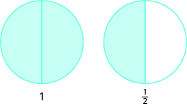
দুটি বৃত্ত, প্রতিটিই সমান 2 ভাগে বিভক্ত। বাঁ দিকের বৃত্তের দুটি ভাগই রঙ করা; নীচে লেখা 1। ডান দিকের বৃত্তের 1টি ভাগ রঙ করা; নীচের ভগ্নাংশে লব 1, হর 2।
ⓑ টি এক-পঞ্চমাংশ দিয়ে টি গোটা তৈরি হয়; বাকি থাকে টি এক-পঞ্চমাংশ।
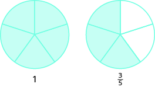
দুটি বৃত্ত, প্রতিটিই সমান 5 ভাগে বিভক্ত। বাঁ দিকের বৃত্তের 5টি ভাগই রঙ করা; নীচে লেখা 1। ডান দিকের বৃত্তের 3টি ভাগ রঙ করা; নীচের ভগ্নাংশে লব 3, হর 5।
ⓒ টি এক-তৃতীয়াংশ দিয়ে টি গোটা তৈরি হয়; বাকি থাকে টি এক-তৃতীয়াংশ।
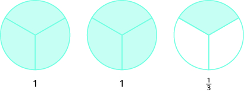
তিনটি বৃত্ত, প্রতিটিই সমান 3 ভাগে বিভক্ত। বাঁ দিকের দুটি বৃত্তের সব ভাগ রঙ করা; প্রত্যেকটির নীচে লেখা 1। ডান দিকের বৃত্তের 1টি ভাগ রঙ করা; নীচের ভগ্নাংশে লব 1, হর 3।
মডেলের সাহায্যে অপ্রকৃত ও মিশ্র ভগ্নাংশ বোঝা
উদাহরণ [fs-id1804189]-এর (b) অংশে তোমার কাছে এক-পঞ্চমাংশ মাপের সমান আটটি টুকরো ছিল। সেগুলির পাঁচটি দিয়ে একটি গোটা তৈরি করলে; বাকি রইল তিন-পঞ্চমাংশ। এবার ভগ্নাংশের প্রতীকে ঘটনাটি লিখি। আটটি টুকরোর প্রত্যেকটির মাপ ছিল তাই সব মিলিয়ে ছিল আট-পঞ্চমাংশ, যাকে লিখতে পারি এই ভগ্নাংশটিতে এক গোটা অংশ আছে, অর্থাৎ আর তার সঙ্গে আরও তিন-পঞ্চমাংশ, অর্থাৎ এই দুইয়ের যোগফল লেখা যায় যা পড়া হয় এক পূর্ণ তিন-পঞ্চমাংশ।
এই সংখ্যাটিকে মিশ্র ভগ্নাংশ বলে। একটি মিশ্র ভগ্নাংশে একটি অঋণাত্মক পূর্ণসংখ্যা ও একটি প্রকৃত ভগ্নাংশ থাকে।
এখানে আলোচিত ধনাত্মক লব ও হরের ক্ষেত্রে, যেমন, এবং ভগ্নাংশগুলিকে অপ্রকৃত ভগ্নাংশ বলে। অপ্রকৃত ভগ্নাংশে লব হর-এর সমান বা বড়ো হয়; তাই ভগ্নাংশটির মান একের সমান বা বড়ো। কোনও ভগ্নাংশের লব হরের চেয়ে ছোটো হলে তাকে প্রকৃত ভগ্নাংশ বলে; তার মান একের চেয়ে ছোটো। যেমন, এবং হল প্রকৃত ভগ্নাংশ।
অনুশীলন · এই প্রশ্নের লিঙ্ক
মডেলে দেখানো অপ্রকৃত ভগ্নাংশটি লেখো। তারপর সেটিকে মিশ্র ভগ্নাংশে প্রকাশ করো।
দুটি বৃত্ত, প্রতিটিই সমান 3 ভাগে বিভক্ত। বাঁ দিকের বৃত্তের 3টি ভাগই রঙ করা; ডান দিকের বৃত্তের 1টি ভাগ রঙ করা।
সমাধান
প্রতিটি বৃত্ত সমান তিন ভাগে ভাগ করা হয়েছে। তাই প্রতিটি ভাগ বৃত্তটির অংশ। মোট চারটি ভাগ রঙ করা আছে; অর্থাৎ রঙ করা অংশের পরিমাণ চার-তৃতীয়াংশ বা চিত্রে একটি গোটা বৃত্ত ও আরও এক-তৃতীয়াংশ দেখা যাচ্ছে; একসঙ্গে তা হল সুতরাং,
অনুশীলন · এই প্রশ্নের লিঙ্ক
চিত্র এঁকে এই ভগ্নাংশটির মডেল দেখাও:
সমাধান
অপ্রকৃত ভগ্নাংশটির হর হল একটি বৃত্ত এঁকে সেটিকে সমান আট ভাগে ভাগ করো এবং সবগুলি ভাগ রঙ করো। এতে আট-অষ্টমাংশ দেখানো হল; কিন্তু আমাদের দেখাতে হবে টি এক-অষ্টমাংশ। তাই একই মাপের আর-একটি বৃত্তের আটটি ভাগের মধ্যে তিনটি রঙ করতে হবে।
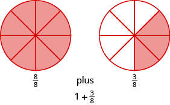
দুটি বৃত্ত, প্রতিটিই সমান 8 ভাগে বিভক্ত। বাঁ দিকের বৃত্তের সব ভাগ রঙ করা; তার নীচে লেখা ভগ্নাংশে লব 8, হর 8। ডান দিকের বৃত্তের 3টি ভাগ রঙ করা; তার নীচে লেখা ভগ্নাংশে লব 3, হর 8। চিত্রে দেখানো হয়েছে, আট-অষ্টমাংশ ও তিন-অষ্টমাংশের যোগফল এক ও তিন-অষ্টমাংশের যোগফলের সমান।
সুতরাং,
অনুশীলন · এই প্রশ্নের লিঙ্ক
মডেলের সাহায্যে এই অপ্রকৃত ভগ্নাংশটিকে মিশ্র ভগ্নাংশে প্রকাশ করো।
সমাধান
শুরুতে আমাদের কাছে রয়েছে টি এক-ষষ্ঠাংশ জানি, ছয়টি এক-ষষ্ঠাংশে এক গোটা হয়।
এরপর আরও পাঁচটি এক-ষষ্ঠাংশ বাকি থাকে, অর্থাৎ
সুতরাং,
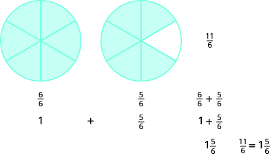
দুটি বৃত্ত, প্রতিটিই সমান 6 ভাগে বিভক্ত। বাঁ দিকের বৃত্তের সব ভাগ রঙ করা; নীচের ভগ্নাংশে লব 6, হর 6। ডান দিকের বৃত্তের 5টি ভাগ রঙ করা; নীচের ভগ্নাংশে লব 5, হর 6। আরও নীচে লেখা আছে এক ও পাঁচ-ষষ্ঠাংশের যোগফল। পরের সমতায় ছয়-ষষ্ঠাংশ ও পাঁচ-ষষ্ঠাংশের যোগফল এগারো-ষষ্ঠাংশ; এক ও পাঁচ-ষষ্ঠাংশের যোগফল এক পূর্ণ পাঁচ-ষষ্ঠাংশ। শেষে দেখানো হয়েছে, লব 11 ও হর 6 বিশিষ্ট ভগ্নাংশটির মান এক পূর্ণ পাঁচ-ষষ্ঠাংশ।
অনুশীলন · এই প্রশ্নের লিঙ্ক
মডেলের সাহায্যে এই মিশ্র ভগ্নাংশটিকে অপ্রকৃত ভগ্নাংশে প্রকাশ করো।
সমাধান
এই মিশ্র ভগ্নাংশের অর্থ এক গোটা ও চার-পঞ্চমাংশের যোগফল। এর হর হল তাই এক গোটাকে লিখি পাঁচটি এক-পঞ্চমাংশ ও চারটি এক-পঞ্চমাংশ মিলে হয় নয়টি এক-পঞ্চমাংশ।
সুতরাং,
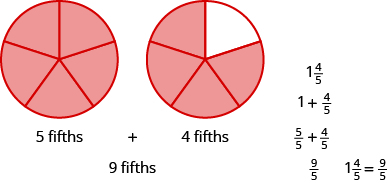
দুটি বৃত্ত, প্রতিটিই সমান 5 ভাগে বিভক্ত। বাঁ দিকের বৃত্তের সব ভাগ রঙ করা; নীচে পাঁচ-পঞ্চমাংশ লেখা আছে। ডান দিকের বৃত্তের 4টি ভাগ রঙ করা; নীচে চার-পঞ্চমাংশ লেখা আছে। আরও দেখানো হয়েছে, পাঁচ-পঞ্চমাংশ ও চার-পঞ্চমাংশের যোগফল নয়-পঞ্চমাংশ, এবং নয়-পঞ্চমাংশ এক ও চার-পঞ্চমাংশের যোগফলের সমান।
অপ্রকৃত ভগ্নাংশ ও মিশ্র ভগ্নাংশের পারস্পরিক রূপান্তর
উদাহরণ [fs-id1598176]-এ ভগ্নাংশের বৃত্ত ব্যবহার করে অপ্রকৃত ভগ্নাংশ -কে মিশ্র ভগ্নাংশ -এ লিখেছিলাম। ছয়টি এক-ষষ্ঠাংশ একত্র করে একটি সমগ্র বানিয়েছিলাম; তার পরে দেখেছিলাম, টি টুকরোর মধ্যে কটি বাকি থাকে। দেখা গেল, -এ ছয়টি এক-ষষ্ঠাংশের একটি পূর্ণ দল ও আরও পাঁচটি এক-ষষ্ঠাংশ আছে। অর্থাৎ,
ভাগের রাশি (যাকে হিসেবেও লেখা যায়) জানায়, এক-একটি দলে টি করে রাখলে মোট কতগুলি দল হবে, তা বার করতে হবে; মোট টুকরোর সংখ্যা ভগ্নাংশের বৃত্ত ব্যবহার না করে অপ্রকৃত ভগ্নাংশকে মিশ্র ভগ্নাংশ-এ রূপান্তর করতে আমরা ভাগ করি।
অনুশীলন · এই প্রশ্নের লিঙ্ক
প্রদত্ত ভগ্নাংশটিকে মিশ্র ভগ্নাংশে রূপান্তর করো:
সমাধান
| লবকে হর দিয়ে ভাগ করো। | মনে রেখো, অর্থ । |
 11-কে 6 দিয়ে ভাগ করার ধাপ: ভাজক 6, ভাগফল 1 এবং ভাগশেষ 5। |
|
| ভাগফল, ভাগশেষ ও ভাজক চিহ্নিত করো। | |
| মিশ্র ভগ্নাংশটি লেখো: । | |
| সুতরাং, |
অনুশীলন · এই প্রশ্নের লিঙ্ক
অপ্রকৃত ভগ্নাংশ -কে মিশ্র ভগ্নাংশে রূপান্তর করো।
সমাধান
| লবকে হর দিয়ে ভাগ করো। | মনে রেখো, ভাগটিকে এভাবেও লেখা যায়: । |
| ভাগফল, ভাগশেষ ও ভাজক চিহ্নিত করো। |  33-কে 8 দিয়ে ভাগ করার ধাপ: ভাজক 8, ভাগফল 4 এবং ভাগশেষ 1। তিরচিহ্ন দিয়ে ভাজক, ভাগফল ও ভাগশেষ দেখানো হয়েছে। |
| মিশ্র ভগ্নাংশটি লেখো: ভাগফল । | |
| সুতরাং, |
উদাহরণ [fs-id4337911]-এ আমরা -কে অপ্রকৃত ভগ্নাংশে লিখেছিলাম। প্রথমে দেখেছিলাম, একটি সমগ্র পাঁচটি এক-পঞ্চমাংশের একটি দল। তাই আমাদের কাছে ছিল পাঁচটি এক-পঞ্চমাংশ এবং আরও চারটি এক-পঞ্চমাংশ।
নয় সংখ্যাটি এল কোথা থেকে? এখানে মোট নয়টি এক-পঞ্চমাংশ আছে: একটি সমগ্র, অর্থাৎ পাঁচটি এক-পঞ্চমাংশ, এবং আরও চারটি এক-পঞ্চমাংশ। এই ধারণা ব্যবহার করে দেখি, মিশ্র ভগ্নাংশকে কীভাবে অপ্রকৃত ভগ্নাংশ-এ রূপান্তর করা যায়।
অনুশীলন · এই প্রশ্নের লিঙ্ক
মিশ্র ভগ্নাংশ -কে অপ্রকৃত ভগ্নাংশে রূপান্তর করো।
সমাধান
| পূর্ণসংখ্যা অংশকে হর দিয়ে গুণ করো। | |
| পূর্ণসংখ্যা অংশ হল 4 এবং হর হল 3। |  অসম্পূর্ণ ভগ্নাংশ। লব: 4 গুণ 3 যোগ একটি ফাঁকা ঘর। হর: একটি ফাঁকা ঘর। |
| সরল করো। |  অসম্পূর্ণ ভগ্নাংশ। লব: 12 যোগ একটি ফাঁকা ঘর। হর: একটি ফাঁকা ঘর। |
| গুণফলের সঙ্গে লব যোগ করো। | |
| মিশ্র ভগ্নাংশের ভগ্নাংশ অংশটির লব হল 2। |  অসম্পূর্ণ ভগ্নাংশ। লব: 12 যোগ 2। হর: একটি ফাঁকা ঘর। |
| সরল করো। |  অসম্পূর্ণ ভগ্নাংশ। লব: 14। হর: একটি ফাঁকা ঘর। |
| শেষে পাওয়া যোগফলকে লব এবং আগের হরকেই হর রেখে ভগ্নাংশটি লেখো। | |
| হর হল 3। |
অনুশীলন · এই প্রশ্নের লিঙ্ক
মিশ্র ভগ্নাংশ -কে অপ্রকৃত ভগ্নাংশে রূপান্তর করো।
সমাধান
| পূর্ণসংখ্যা অংশকে হর দিয়ে গুণ করো। | |
| পূর্ণসংখ্যা অংশ হল 10 এবং হর হল 7। |  অসম্পূর্ণ ভগ্নাংশ। লব: 10 গুণ 7 যোগ একটি ফাঁকা ঘর। হর: একটি ফাঁকা ঘর। |
| সরল করো। |  অসম্পূর্ণ ভগ্নাংশ। লব: 70 যোগ একটি ফাঁকা ঘর। হর: একটি ফাঁকা ঘর। |
| গুণফলের সঙ্গে লব যোগ করো। | |
| মিশ্র ভগ্নাংশের ভগ্নাংশ অংশটির লব হল 2। |  অসম্পূর্ণ ভগ্নাংশ। লব: 70 যোগ 2। হর: একটি ফাঁকা ঘর। |
| সরল করো। |  অসম্পূর্ণ ভগ্নাংশ। লব: 72। হর: একটি ফাঁকা ঘর। |
| শেষে পাওয়া যোগফলকে লব এবং আগের হরকেই হর রেখে ভগ্নাংশটি লেখো। | |
| হর হল 7। |
মডেলের সাহায্যে সমতুল ভগ্নাংশ দেখানো
আবার অ্যান্ডি, ববি আর তাদের প্রিয় খাবারের কথা ভাবি। অ্যান্ডি যদি একটি পিৎজার অংশ খায় আর ববি সেই পিৎজার অংশ খায়, তবে কি তারা সমান পরিমাণ পিৎজা খেয়েছে? অন্য ভাবে বললে, এই সমতা কি ঠিক: অ্যান্ডি ও ববি পিৎজার সমপরিমাণ অংশ খেয়েছে কি না, তা ভগ্নাংশের পাত ব্যবহার করে দেখা যায়।
সমতুল ভগ্নাংশ বোঝাতে ভগ্নাংশের পাত একটি কাজের মডেল। পরের কাজটি করার জন্য তুমি ভগ্নাংশের পাত ব্যবহার করতে পারো। অথবা চিত্র [CNX_BMath_Figure_04_01_014]-এর একটি প্রতিলিপি তৈরি করে তাতে এক-অষ্টমাংশ, এক-দশমাংশ ও এক-দ্বাদশাংশের পাতের সারিও যোগ করতে পারো।
প্রথমে মাপের একটি পাত নাও। এক-চতুর্থাংশের কতগুলি ভাগ মিলে অর্ধেক হয়? অর্থাৎ, মাপের কতগুলি পাত দিয়ে ঠিক ঢেকে দেওয়া যায় মাপের পাতটিকে?
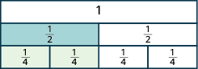
একই দৈর্ঘ্যের তিনটি আয়তাকার সারি রয়েছে। উপরের অবিভক্ত সারিতে 1 লেখা। মাঝের সারি দুটি সমান ভাগে বিভক্ত; প্রতিটি ভাগে এক-দ্বিতীয়াংশ লেখা। নীচের সারি চারটি সমান ভাগে বিভক্ত; প্রতিটি ভাগে এক-চতুর্থাংশ লেখা। মাঝের সারির বাঁ দিকের একটি অর্ধেক এবং নীচের সারির বাঁ দিকের দুটি এক-চতুর্থাংশ রঙ করা। দুটি সারিতেই রঙ করা অংশের দৈর্ঘ্য সমান।
দুটি মাপের পাত দিয়ে ঢেকে দেওয়া যায় মাপের পাতটি। তাই আমরা দেখি -এর মান হল অর্থাৎ
কতগুলি মাপের পাত দিয়ে ঢেকে দেওয়া যায় মাপের পাতটিকে?
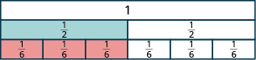
একই দৈর্ঘ্যের তিনটি আয়তাকার সারি রয়েছে। উপরের অবিভক্ত সারিতে 1 লেখা। মাঝের সারি দুটি সমান ভাগে বিভক্ত; প্রতিটি ভাগে এক-দ্বিতীয়াংশ লেখা। নীচের সারি ছয়টি সমান ভাগে বিভক্ত; প্রতিটি ভাগে এক-ষষ্ঠাংশ লেখা। মাঝের সারির বাঁ দিকের একটি অর্ধেক এবং নীচের সারির বাঁ দিকের তিনটি এক-ষষ্ঠাংশ রঙ করা। দুটি সারিতেই রঙ করা অংশের দৈর্ঘ্য সমান।
তিনটি মাপের পাত দিয়ে ঢেকে দেওয়া যায় মাপের পাতটি। তাই আমরা দেখি -এর মান হল
সুতরাং, ভগ্নাংশ দুটি হল সমতুল ভগ্নাংশ।
অনুশীলন · এই প্রশ্নের লিঙ্ক
- ⓐ এক-অষ্টমাংশের কতগুলি ভাগ মিলে অর্ধেক হয়?
- ⓑ এক-দশমাংশের কতগুলি ভাগ মিলে অর্ধেক হয়?
- ⓒ এক-দ্বাদশাংশের কতগুলি ভাগ মিলে অর্ধেক হয়?
সমাধান
ⓐ একই সমগ্রের মাপের চারটি পাত দিয়ে ঠিক ঢেকে দেওয়া যায় মাপের একটি পাত। তাই
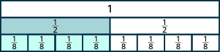
একই দৈর্ঘ্যের তিনটি আয়তাকার সারি রয়েছে। উপরের অবিভক্ত সারিতে 1 লেখা। মাঝের সারি দুটি সমান ভাগে বিভক্ত; প্রতিটি ভাগে এক-দ্বিতীয়াংশ লেখা। নীচের সারি আটটি সমান ভাগে বিভক্ত; প্রতিটি ভাগে এক-অষ্টমাংশ লেখা। মাঝের সারির বাঁ দিকের একটি অর্ধেক এবং নীচের সারির বাঁ দিকের চারটি এক-অষ্টমাংশ রঙ করা। দুটি সারিতেই রঙ করা অংশের দৈর্ঘ্য সমান।
ⓑ একই সমগ্রের মাপের পাঁচটি পাত দিয়ে ঠিক ঢেকে দেওয়া যায় মাপের একটি পাত। তাই
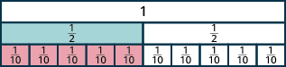
একই দৈর্ঘ্যের তিনটি আয়তাকার সারি রয়েছে। উপরের অবিভক্ত সারিতে 1 লেখা। মাঝের সারি দুটি সমান ভাগে বিভক্ত; প্রতিটি ভাগে এক-দ্বিতীয়াংশ লেখা। নীচের সারি দশটি সমান ভাগে বিভক্ত; প্রতিটি ভাগে এক-দশমাংশ লেখা। মাঝের সারির বাঁ দিকের একটি অর্ধেক এবং নীচের সারির বাঁ দিকের পাঁচটি এক-দশমাংশ রঙ করা। দুটি সারিতেই রঙ করা অংশের দৈর্ঘ্য সমান।
ⓒ একই সমগ্রের মাপের ছয়টি পাত দিয়ে ঠিক ঢেকে দেওয়া যায় মাপের একটি পাত। তাই
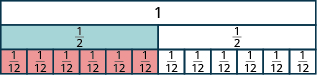
একই দৈর্ঘ্যের তিনটি আয়তাকার সারি রয়েছে। উপরের অবিভক্ত সারিতে 1 লেখা। মাঝের সারি দুটি সমান ভাগে বিভক্ত; প্রতিটি ভাগে এক-দ্বিতীয়াংশ লেখা। নীচের সারি বারোটি সমান ভাগে বিভক্ত; প্রতিটি ভাগে এক-দ্বাদশাংশ লেখা। মাঝের সারির বাঁ দিকের একটি অর্ধেক এবং নীচের সারির বাঁ দিকের ছয়টি এক-দ্বাদশাংশ রঙ করা। দুটি সারিতেই রঙ করা অংশের দৈর্ঘ্য সমান।
ধরো, তোমার কাছে কিছু পাত আছে, প্রতিটিতে লেখা এর কতগুলি পাত মিলে হয় তুমি কি দশটি পাতের কথা ভাবছ? তা হলে তুমি ঠিকই ভেবেছ, কারণ
আমরা দেখিয়েছি যে ও —সবই সমতুল ভগ্নাংশ।
সমতুল ভগ্নাংশ নির্ণয়
ভগ্নাংশের পাত সাজিয়ে অনেকগুলি সমতুল ভগ্নাংশ পেয়েছি যাদের মান যেমন, এবং —সব কটির মান পাতগুলি পাশাপাশি রেখে দেখা যায়, মাপের চারটি পাতের মোট দৈর্ঘ্য মাপের একটি পাতের দৈর্ঘ্যের সমান। অর্থাৎ, দেখো: উদাহরণ [fs-id1816712]।
পিৎজার সাহায্যেও এটি দেখানো যায়। চিত্র [CNX_BMath_Figure_04_01_071]-এর (a) অংশে একটি পিৎজাকে সমান দু-ভাগে ভাগ করে তার অংশ রঙ করা হয়েছে। চিত্র [CNX_BMath_Figure_04_01_071]-এর (b) অংশে একই মাপের আর-একটি পিৎজাকে সমান আট ভাগে ভাগ করে তার অংশ রঙ করা হয়েছে।
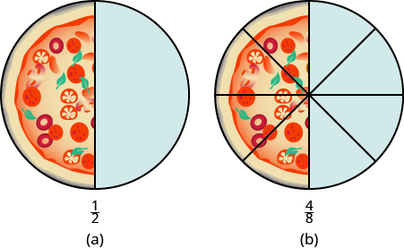
একই মাপের দুটি পিৎজা। বাঁ দিকের পিৎজাটি সমান 2 ভাগে বিভক্ত; 1 ভাগ রঙ করা। ডান দিকের পিৎজাটি সমান 8 ভাগে বিভক্ত; 4 ভাগ রঙ করা।
এভাবেও বোঝা যায়, এর সমতুল ভগ্নাংশ হল
কোন গণনা করলে -এর সমতুল ভগ্নাংশ হিসেবে পাব একটি পিৎজা দু-ভাগে কাটা থাকলে সেটিকে আট ভাগে কাটবে কীভাবে? বড় দুটি টুকরোর প্রত্যেকটিকে সমান চারটি ছোট টুকরোয় কাটতে পারো। তখন গোটা পিৎজাটি দুই ভাগের বদলে আটটি সমান ভাগে ভাগ হবে। গণিতের ভাষায় এই কাজটি লেখা যায় এভাবে:
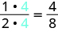
লবে 1 গুণ 4 এবং হরে 2 গুণ 4। গুণ করে পাই: লব 4, হর 8। গুণক 4 দুটি আলাদা রঙে দেখানো।
এই মডেলগুলি থেকে সমতুল ভগ্নাংশের ধর্মটি পাই: কোনও ভগ্নাংশের লব ও হর-কে একই অশূন্য সংখ্যা দিয়ে গুণ করলে ভগ্নাংশটির মান বদলায় না।
ভগ্নাংশের অঙ্ক করার সময় একই ভগ্নাংশকে প্রায়ই অন্য রূপে লিখতে হয়। সমতুল ভগ্নাংশের ধর্ম ব্যবহার করে এই রূপগুলি পাওয়া যায়। যেমন, এক-দ্বিতীয়াংশ বা অর্ধেক ভগ্নাংশটি ধরা যাক।
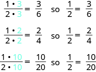
প্রথম লাইনে: লবে 1 গুণ 3, হরে 2 গুণ 3; ফলে লব 3, হর 6। তাই এক-দ্বিতীয়াংশ সমান তিন-ষষ্ঠাংশ। পরের লাইনে মূল লব ও হরকে 2 দিয়ে গুণ করে পাই: লব 2, হর 4। শেষ লাইনে মূল লব ও হরকে 10 দিয়ে গুণ করে পাই: লব 10, হর 20।
সুতরাং, এবং হল সমতুল ভগ্নাংশ।
অনুশীলন · এই প্রশ্নের লিঙ্ক
প্রদত্ত ভগ্নাংশটির সমতুল তিনটি ভগ্নাংশ নির্ণয় করো:
সমাধান
প্রদত্ত ভগ্নাংশটি হল এর সমতুল ভগ্নাংশ পেতে লব ও হরকে একই সংখ্যা দিয়ে গুণ করি; সেই সংখ্যা শূন্য হতে পারবে না। তিনবারের গুণকগুলি হল যথাক্রমে এবং
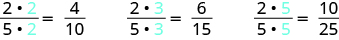
বাঁ দিকে লবে 2 গুণ 2, হরে 5 গুণ 2; ফলে লব 4, হর 10। মাঝে লবে 2 গুণ 3, হরে 5 গুণ 3; ফলে লব 6, হর 15। ডান দিকে লবে 2 গুণ 5, হরে 5 গুণ 5; ফলে লব 10, হর 25।
সুতরাং, এবং —প্রত্যেকটি ভগ্নাংশের মান
অনুশীলন · এই প্রশ্নের লিঙ্ক
এমন একটি ভগ্নাংশ নির্ণয় করো যার হর এবং যা এই ভগ্নাংশটির সমতুল:
সমাধান
সমতুল ভগ্নাংশ পেতে লব ও হরকে একই সংখ্যা দিয়ে গুণ করি। এখানে হরকে এমন একটি সংখ্যা দিয়ে গুণ করতে হবে যাতে গুণফল হয়
যেহেতু -কে দিয়ে গুণ করলে পাই তাই লব ও হর উভয়কেই যে সংখ্যা দিয়ে গুণ করতে হবে, তা হল
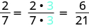
মূল ভগ্নাংশে লব 2, হর 7। লবে 2 গুণ 3 ও হরে 7 গুণ 3 করে পাই সমতুল ভগ্নাংশ: লব 6, হর 21। গুণক 3 দুটি আলাদা রঙে দেখানো।
সংখ্যারেখায় ভগ্নাংশ ও মিশ্র ভগ্নাংশের অবস্থান নির্ণয়
এবার আমরা সংখ্যারেখায় ভগ্নাংশের অবস্থান দেখাতে পারব। এতে ভগ্নাংশগুলি চোখের সামনে ফুটে উঠবে এবং তাদের মান বুঝতে সুবিধা হবে।
সংখ্যারেখায় এই সংখ্যাগুলির অবস্থান দেখাই: এবং ।
প্রথমে পূর্ণসংখ্যা ও -এর অবস্থান দেখাব, কারণ এদের অবস্থান দেখানো সবচেয়ে সহজ।
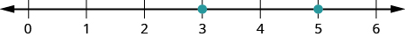
সংখ্যারেখায় 0 থেকে 6 পর্যন্ত পূর্ণসংখ্যাগুলি লেখা আছে। 3 ও 5-এ বিন্দু রয়েছে।
তালিকার প্রকৃত ভগ্নাংশ দুটি হল ও আমরা জানি, প্রকৃত ভগ্নাংশের মান একের চেয়ে ছোট। তাই ও -এর অবস্থান হবে এই দুই পূর্ণসংখ্যার মধ্যে: ও দুটি ভগ্নাংশেরই হর তাই সংখ্যারেখায় ও -এর মধ্যবর্তী অংশকে পাঁচটি সমান ভাগে ভাগ করতে হবে। এই অংশে সমান দূরত্বে চারটি দাগ টেনে ভাগগুলি করা যায়। দাগগুলির পাশে যথাক্রমে লিখি ও
এবার বিন্দু দিয়ে চিহ্নিত করো ও
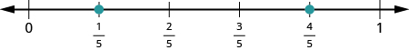
সংখ্যারেখায় বাঁ দিক থেকে লেখা আছে 0, এক-পঞ্চমাংশ, দুই-পঞ্চমাংশ, তিন-পঞ্চমাংশ, চার-পঞ্চমাংশ ও 1। এক-পঞ্চমাংশ ও চার-পঞ্চমাংশে বিন্দু রয়েছে।
যে একটিমাত্র মিশ্র ভগ্নাংশর অবস্থান দেখাতে হবে, সেটি হল কোন দুটি পূর্ণসংখ্যার মধ্যে রয়েছে মনে রেখো, একটি পূর্ণসংখ্যার সঙ্গে একটি প্রকৃত ভগ্নাংশ যোগ করলে মিশ্র ভগ্নাংশ পাওয়া যায়। তাই এটি যে পূর্ণসংখ্যার চেয়ে বড়, সেটি হল কিন্তু পুরো এক একক বড় নয়। তাই -এর অবস্থান হবে এই দুই পূর্ণসংখ্যার মধ্যে: ও সংখ্যারেখায় ও -এর মধ্যবর্তী অংশকে তিনটি সমান ভাগে ভাগ করো। বাঁ দিক থেকে প্রথম দাগে যে মিশ্র ভগ্নাংশটি বসবে, সেটি হল ।
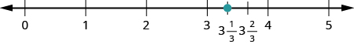
সংখ্যারেখায় 0 থেকে 5 পর্যন্ত পূর্ণসংখ্যাগুলি লেখা আছে। 3 ও 4-এর মধ্যে 3 পূর্ণ এক-তৃতীয়াংশ এবং 3 পূর্ণ দুই-তৃতীয়াংশ লেখা আছে। 3 পূর্ণ এক-তৃতীয়াংশে একটি বিন্দু রয়েছে।
সব শেষে অপ্রকৃত ভগ্নাংশগুলি দেখো: ও প্রতিটিকে মিশ্র ভগ্নাংশে প্রকাশ করলে সংখ্যারেখায় তাদের অবস্থান দেখানো সহজ হবে।
এখানে সব কটি সংখ্যার অবস্থান একই সংখ্যারেখায় দেখানো হয়েছে।
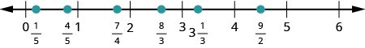
সংখ্যারেখায় 0 থেকে 6 পর্যন্ত পূর্ণসংখ্যাগুলি লেখা আছে। 0 ও 1-এর মধ্যে এক-পঞ্চমাংশ ও চার-পঞ্চমাংশ; 1 ও 2-এর মধ্যে সাত-চতুর্থাংশ; 2 ও 3-এর মধ্যে আট-তৃতীয়াংশ; 3 ও 4-এর মধ্যে 3 পূর্ণ এক-তৃতীয়াংশ; এবং 4 ও 5-এর মধ্যে নয়-দ্বিতীয়াংশ লেখা আছে। এই ছয়টি অবস্থানে এবং পূর্ণসংখ্যা 3 ও 5-এ বিন্দু রয়েছে।
অনুশীলন · এই প্রশ্নের লিঙ্ক
সংখ্যারেখায় নীচের সংখ্যাগুলির অবস্থান দেখাও এবং বিন্দুগুলির পাশে তাদের মান লেখো: ও
সমাধান
প্রথমে প্রকৃত ভগ্নাংশটির অবস্থান দেখাও: সংখ্যাটি রয়েছে এই দুই পূর্ণসংখ্যার মধ্যে: ও তাই ও -এর মধ্যবর্তী দূরত্বকে চারটি সমান ভাগে ভাগ করো। তারপর বিন্দু দিয়ে চিহ্নিত করো
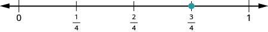
সংখ্যারেখায় বাঁ দিক থেকে লেখা আছে 0, এক-চতুর্থাংশ, দুই-চতুর্থাংশ, তিন-চতুর্থাংশ ও 1। তিন-চতুর্থাংশে একটি বিন্দু রয়েছে।
এরপর মিশ্র ভগ্নাংশটির অবস্থান দেখাও: সংখ্যারেখায় এটি রয়েছে ও -এর মধ্যে। সংখ্যারেখায় ও -এর মধ্যবর্তী অংশকে পাঁচটি সমান ভাগে ভাগ করো। এবার যে সংখ্যাটি বসাতে হবে, সেটি । এটি থাকবে থেকে -এর দিকে এক-পঞ্চমাংশ পথ এগিয়ে।
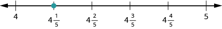
সংখ্যারেখায় বাঁ দিক থেকে লেখা আছে 4, 4 পূর্ণ এক-পঞ্চমাংশ, 4 পূর্ণ দুই-পঞ্চমাংশ, 4 পূর্ণ তিন-পঞ্চমাংশ, 4 পূর্ণ চার-পঞ্চমাংশ ও 5। 4 পূর্ণ এক-পঞ্চমাংশে একটি বিন্দু রয়েছে।
এবার অপ্রকৃত ভগ্নাংশ দুটির অবস্থান দেখাও: ও ।
আগে এগুলিকে মিশ্র ভগ্নাংশে প্রকাশ করলে অবস্থান দেখানো সহজ হবে।
সংখ্যারেখায় ও -এর মধ্যবর্তী দূরত্বকে তিনটি সমান ভাগে ভাগ করো।
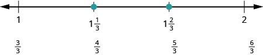
সংখ্যারেখায় বাঁ দিক থেকে লেখা আছে 1, 1 পূর্ণ এক-তৃতীয়াংশ, 1 পূর্ণ দুই-তৃতীয়াংশ ও 2। তাদের ঠিক নীচে যথাক্রমে লেখা আছে তিন-তৃতীয়াংশ, চার-তৃতীয়াংশ, পাঁচ-তৃতীয়াংশ ও ছয়-তৃতীয়াংশ। 1 পূর্ণ এক-তৃতীয়াংশ ও 1 পূর্ণ দুই-তৃতীয়াংশে বিন্দু রয়েছে।
এরপর যে ভগ্নাংশটির অবস্থান দেখাব, সেটি হল মিশ্র ভগ্নাংশে লিখি: । সংখ্যাটির অবস্থান দেখাও এই দুই পূর্ণসংখ্যার মধ্যে: ও
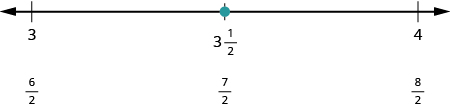
সংখ্যারেখায় বাঁ দিক থেকে লেখা আছে 3, 3 পূর্ণ এক-দ্বিতীয়াংশ ও 4। তাদের ঠিক নীচে যথাক্রমে লেখা আছে ছয়-দ্বিতীয়াংশ, সাত-দ্বিতীয়াংশ ও আট-দ্বিতীয়াংশ। 3 পূর্ণ এক-দ্বিতীয়াংশে একটি বিন্দু রয়েছে।
নীচের সংখ্যারেখায় সব কটি সংখ্যার অবস্থান দেখানো হয়েছে।
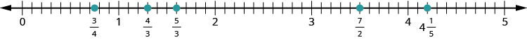
সংখ্যারেখায় 0 থেকে 5 পর্যন্ত পূর্ণসংখ্যাগুলি লেখা আছে। প্রতি একক দূরত্ব দশটি সমান ভাগে ভাগ করা হয়েছে। 0 ও 1-এর মধ্যে সপ্তম ও অষ্টম ভাগের দাগের মাঝখানে তিন-চতুর্থাংশ লেখা আছে। 1 ও 2-এর মধ্যে চার-তৃতীয়াংশ ও পাঁচ-তৃতীয়াংশ; 3 ও 4-এর মধ্যে সাত-দ্বিতীয়াংশ; এবং 4 ও 5-এর মধ্যে 4 পূর্ণ এক-পঞ্চমাংশ লেখা আছে। এই পাঁচটি অবস্থানে বিন্দু রয়েছে।
‘পূর্ণসংখ্যার পরিচয়’ পাঠে আমরা একটি সংখ্যার বিপরীত সংখ্যা কাকে বলে তা জেনেছি। সংখ্যারেখায় এই দুটি সংখ্যা শূন্য থেকে সমান দূরত্বে থাকে, কিন্তু শূন্যের দুই বিপরীত দিকে থাকে। যেমন, আমরা দেখেছি -এর বিপরীত সংখ্যা এবং -এর বিপরীত সংখ্যা
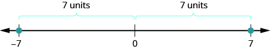
সংখ্যারেখায় ঋণাত্মক 7, 0 ও 7 লেখা আছে। ঋণাত্মক 7 ও 7-এ বিন্দু রয়েছে। ঋণাত্মক 7 থেকে 0-এর দূরত্ব 7 একক এবং 0 থেকে 7-এর দূরত্বও 7 একক বলে দেখানো হয়েছে।
ভগ্নাংশেরও বিপরীত সংখ্যা আছে। যেমন, -এর বিপরীত সংখ্যা সংখ্যারেখায় দুটি সংখ্যা থেকে সমান দূরত্বে থাকলেও তারা থাকে দুই বিপরীত দিকে; মাঝখানে থাকে
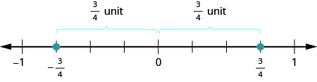
সংখ্যারেখায় বাঁ দিক থেকে লেখা আছে ঋণাত্মক 1, ঋণাত্মক তিন-চতুর্থাংশ, 0, তিন-চতুর্থাংশ ও 1। ঋণাত্মক তিন-চতুর্থাংশ ও তিন-চতুর্থাংশে বিন্দু রয়েছে। প্রতিটি বিন্দু থেকে 0-এর দূরত্ব এক এককের তিন-চতুর্থাংশ বলে দেখানো হয়েছে।
ঋণাত্মক ভগ্নাংশকে সংশ্লিষ্ট ধনাত্মক ভগ্নাংশের বিপরীত সংখ্যা হিসেবে ভাবলে সংখ্যারেখায় তার অবস্থান নির্ণয় করা সহজ হয়। সংখ্যারেখায় -এর অবস্থান দেখাতে হলে আগে ভাবো কোথায় রয়েছে । এটি একটি অপ্রকৃত ভগ্নাংশ; তাই আগে মিশ্র ভগ্নাংশে লিখি । সংখ্যারেখায় এর অবস্থান হবে ও -এর মধ্যে। সুতরাং এর বিপরীত সংখ্যা, অর্থাৎ সংখ্যারেখায় থাকবে ও -এর মধ্যে।
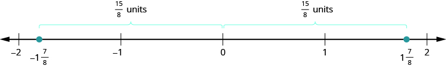
সংখ্যারেখায় ঋণাত্মক 2, ঋণাত্মক 1, 0, 1 ও 2 লেখা আছে। 1 ও 2-এর মধ্যে 1 পূর্ণ সাত-অষ্টমাংশে একটি বিন্দু রয়েছে। ঋণাত্মক 2 ও ঋণাত্মক 1-এর মধ্যে তার বিপরীত সংখ্যা, অর্থাৎ ঋণাত্মক 1 পূর্ণ সাত-অষ্টমাংশে আর-একটি বিন্দু রয়েছে। প্রতিটি বিন্দু থেকে 0-এর দূরত্ব পনেরো-অষ্টমাংশ একক বলে দেখানো হয়েছে।
অনুশীলন · এই প্রশ্নের লিঙ্ক
সংখ্যারেখায় নীচের সংখ্যাগুলির অবস্থান দেখাও এবং বিন্দুগুলির পাশে তাদের মান লেখো: ও
সমাধান
একটি সংখ্যারেখা আঁকো। মাঝখানে চিহ্নিত করো । তারপর তার বাঁ দিকে ও ডান দিকে কয়েকটি একক চিহ্নিত করো।
প্রথমে যে ভগ্নাংশটির অবস্থান দেখাতে হবে, সেটি তাই ও -এর মধ্যবর্তী অংশকে চারটি সমান ভাগে ভাগ করো। প্রতিটি ভাগ এই দূরত্বের এক-চতুর্থাংশ। শূন্যের ডান দিকে প্রথম দাগে যে সংখ্যাটি বসবে, সেটি ।
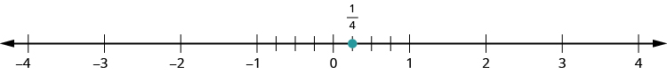
সংখ্যারেখায় ঋণাত্মক 4 থেকে 4 পর্যন্ত পূর্ণসংখ্যাগুলি লেখা আছে। ঋণাত্মক 1 থেকে 0 এবং 0 থেকে 1-এর দূরত্ব চারটি করে সমান ভাগে ভাগ করা হয়েছে; প্রতিটি অংশের ভিতরে তিনটি দাগ আছে। 0-এর ডান দিকে প্রথম দাগে এক-চতুর্থাংশ লেখা এবং একটি বিন্দু রয়েছে।
এরপর যে ভগ্নাংশটির অবস্থান দেখাতে হবে, সেটি তাই ও -এর মধ্যবর্তী অংশকে চারটি সমান ভাগে ভাগ করো। যে সংখ্যাটি বসবে সেটি ; একে বসাও বাঁ দিকের প্রথম দাগে; যে সংখ্যা থেকে গুনবে, সেটি
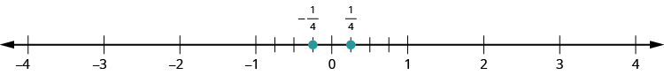
সংখ্যারেখায় ঋণাত্মক 4 থেকে 4 পর্যন্ত পূর্ণসংখ্যাগুলি লেখা আছে। ঋণাত্মক 1 থেকে 0 এবং 0 থেকে 1-এর দূরত্ব চারটি করে সমান ভাগে ভাগ করা হয়েছে; প্রতিটি অংশের ভিতরে তিনটি দাগ আছে। 0-এর ডান দিকে প্রথম দাগে এক-চতুর্থাংশ এবং বাঁ দিকে প্রথম দাগে ঋণাত্মক এক-চতুর্থাংশ লেখা আছে। দুটি অবস্থানেই বিন্দু রয়েছে।
মিশ্র ভগ্নাংশ -এর দুই পাশে রয়েছে পূর্ণসংখ্যা ও তাই ও -এর মধ্যবর্তী অংশকে তিনটি সমান ভাগে ভাগ করো। যে মিশ্র ভগ্নাংশটি বসবে সেটি ; একে বসাও ডান দিকের প্রথম দাগে; যে সংখ্যা থেকে গুনবে, সেটি আবার হল -এর বিপরীত সংখ্যা। তাই এটি রয়েছে এই দুই পূর্ণসংখ্যার মধ্যে: ও সংখ্যারেখায় ও -এর মধ্যবর্তী অংশকে তিনটি সমান ভাগে ভাগ করো। যে মিশ্র ভগ্নাংশটি বসবে সেটি ; একে বসাও বাঁ দিকের প্রথম দাগে; যে সংখ্যা থেকে গুনবে, সেটি
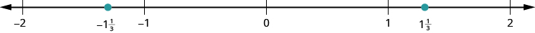
সংখ্যারেখায় ঋণাত্মক 2 থেকে 2 পর্যন্ত পূর্ণসংখ্যাগুলি লেখা আছে। 1 ও 2-এর মধ্যে 1 পূর্ণ এক-তৃতীয়াংশে একটি বিন্দু রয়েছে। ঋণাত্মক 2 ও ঋণাত্মক 1-এর মধ্যে তার বিপরীত সংখ্যা, অর্থাৎ ঋণাত্মক 1 পূর্ণ এক-তৃতীয়াংশে আর-একটি বিন্দু রয়েছে।
এবার অবস্থান দেখাতে হবে ও এদের মিশ্র ভগ্নাংশে লিখলে সুবিধা হবে। মিশ্র ভগ্নাংশ দুটি যথাক্রমে ও
মিশ্র ভগ্নাংশ -এর দুই পাশে রয়েছে পূর্ণসংখ্যা ও তাই ও -এর মধ্যবর্তী অংশকে দুটি সমান ভাগে ভাগ করো। মাঝের দাগে যে ভগ্নাংশটি বসবে, সেটি । আবার মিশ্র ভগ্নাংশ -এর দুই পাশে রয়েছে পূর্ণসংখ্যা ও তাই ও -এর মধ্যবর্তী অংশকে দুটি সমান ভাগে ভাগ করো। মাঝের দাগে যে ভগ্নাংশটি বসবে, সেটি ।
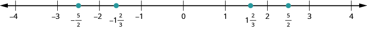
সংখ্যারেখায় −4 থেকে 4 পর্যন্ত পূর্ণসংখ্যাগুলি চিহ্নিত। −5/2 এবং 5/2-এ বিন্দু রয়েছে; অর্থাৎ ঋণাত্মক ও ধনাত্মক 2 পূর্ণ এক-দ্বিতীয়াংশে। আরও দুটি বিন্দুতে ঋণাত্মক ও ধনাত্মক 1 পূর্ণ দুই-তৃতীয়াংশ লেখা আছে। সম্পাদকীয় সতর্কতা: মূল চিত্রে অতিরিক্ত বিন্দুদুটি 1 পূর্ণ দুই-তৃতীয়াংশের ধনাত্মক ও ঋণাত্মক মানে দেখানো, কিন্তু আগের ধাপে আলোচিত সংখ্যাদুটি ছিল 1 পূর্ণ এক-তৃতীয়াংশের ধনাত্মক ও ঋণাত্মক মান। −5/2 ও 5/2-এর অবস্থান সঠিক।
ভগ্নাংশ ও মিশ্র ভগ্নাংশকে ছোটো-বড়োর ক্রমে সাজানো
অসমতা-চিহ্নের সাহায্যে ভগ্নাংশগুলিকে ছোটো-বড়োর ক্রমে সাজানো যায়। মনে রেখো, -এর অর্থ, সংখ্যারেখায় রয়েছে -এর ডান দিকে। সংখ্যারেখায় বাঁ থেকে ডান দিকে গেলে মান বাড়ে।
অনুশীলন · এই প্রশ্নের লিঙ্ক
- ⓐ
- ⓑ
- ⓒ
- ⓓ
সমাধান
ⓐ

সংখ্যারেখায় −3 থেকে 3 পর্যন্ত পূর্ণসংখ্যাগুলি চিহ্নিত। −1 বিন্দুটি দেখানো আছে। −1 ও 0-এর মাঝে −2/3 বিন্দুটি দেখানো আছে; সেটি −1-এর ডান দিকে। তাই −2/3 বড়ো।
ⓑ

সংখ্যারেখায় −4 থেকে 4 পর্যন্ত পূর্ণসংখ্যাগুলি চিহ্নিত। −3 বিন্দুটি দেখানো আছে। −4 ও −3-এর মাঝে ঋণাত্মক মিশ্র ভগ্নাংশ −3 1/2, অর্থাৎ −7/2, দেখানো আছে। এটি −3-এর বাঁ দিকে।
ⓒ

সংখ্যারেখায় −3 থেকে 3 পর্যন্ত পূর্ণসংখ্যাগুলি চিহ্নিত। −1 ও 0-এর মাঝে −3/7 এবং −3/8 বিন্দুদুটি দেখানো আছে। −3/7 বিন্দুটি −3/8-এর বাঁ দিকে; তাই −3/7 ছোটো।
ⓓ

সংখ্যারেখায় −3 থেকে 3 পর্যন্ত পূর্ণসংখ্যাগুলি চিহ্নিত। −2 বিন্দুটি দেখানো আছে। −2 ও −1-এর মাঝে −16/9 বিন্দুটি দেখানো আছে। −2 বিন্দুটি −16/9-এর বাঁ দিকে; তাই −2 ছোটো।
মূল ধারণাগুলি
- একের ধর্ম
- শূন্য ছাড়া যে-কোনো সংখ্যাকে সেই সংখ্যা দিয়েই ভাগ করলে ভাগফল এক হয়।
, যেখানে ।
- শূন্য ছাড়া যে-কোনো সংখ্যাকে সেই সংখ্যা দিয়েই ভাগ করলে ভাগফল এক হয়।
- মিশ্র ভগ্নাংশ
- একটি মিশ্র ভগ্নাংশ-এ থাকে একটি অঋণাত্মক পূর্ণসংখ্যা এবং একটি প্রকৃত ভগ্নাংশ , যেখানে ।
- এভাবে লেখা হয়: ।
- প্রকৃত ও অপ্রকৃত ভগ্নাংশ
- এখানে আলোচিত ধনাত্মক লব ও হরের ক্ষেত্রে, ভগ্নাংশটি প্রকৃত হয় যদি ; আর অপ্রকৃত হয় যদি ।
- অপ্রকৃত ভগ্নাংশকে মিশ্র ভগ্নাংশে রূপান্তর করো।
- লবকে হর দিয়ে ভাগ করো।
- ভাগফল, ভাগশেষ ও ভাজক চিহ্নিত করো।
- ভাগফলটিকে পূর্ণ অংশ ধরে তার ডান পাশে ভগ্নাংশটি বসিয়ে মিশ্র ভগ্নাংশ লেখো: ভাগফল ।
- মিশ্র ভগ্নাংশকে অপ্রকৃত ভগ্নাংশে রূপান্তর করো।
- পূর্ণ অংশকে হর দিয়ে গুণ করো।
- ধাপ 1-এ পাওয়া গুণফলের সঙ্গে লব যোগ করো।
- শেষে পাওয়া যোগফলকে লব এবং আগের হরটিকেই হর ধরে ভগ্নাংশ লেখো।
- সমতুল ভগ্নাংশের ধর্ম
- যদি এবং এমন সংখ্যা হয় যেখানে ও , তবে ।
অনুশীলনে দক্ষতা বাড়ে
নীচের অনুশীলনীগুলিতে প্রতিটি চিত্রের রঙ করা অংশটি কোন ভগ্নাংশ, তা লেখো।
অনুশীলন · এই প্রশ্নের লিঙ্ক

(a) বৃত্তটি 4টি সমান ভাগে বিভক্ত; 1টি ভাগ রঙ করা। (b) বৃত্তটি 4টি সমান ভাগে বিভক্ত; 3টি ভাগ রঙ করা। (c) বৃত্তটি 8টি সমান ভাগে বিভক্ত; 3টি ভাগ রঙ করা। (d) বৃত্তটি 8টি সমান ভাগে বিভক্ত; 5টি ভাগ রঙ করা।
উৎসে প্রদত্ত উত্তর
- ⓐ
- ⓑ
- ⓒ
- ⓓ
অনুশীলন · এই প্রশ্নের লিঙ্ক

(a) বৃত্তটি 12টি সমান ভাগে বিভক্ত; 7টি ভাগ রঙ করা। (b) বৃত্তটি 12টি সমান ভাগে বিভক্ত; 5টি ভাগ রঙ করা। (c) বর্গক্ষেত্রটি 9টি সমান ভাগে বিভক্ত; 4টি ভাগ রঙ করা। (d) বর্গক্ষেত্রটি 9টি সমান ভাগে বিভক্ত; 5টি ভাগ রঙ করা।
নীচের অনুশীলনীগুলিতে বৃত্ত বা বর্গক্ষেত্রের অংশ রঙ করে প্রদত্ত ভগ্নাংশগুলি দেখাও।

অনুশীলন · এই প্রশ্নের লিঙ্ক

অনুশীলন · এই প্রশ্নের লিঙ্ক

অনুশীলন · এই প্রশ্নের লিঙ্ক

অনুশীলন · এই প্রশ্নের লিঙ্ক
নীচের অনুশীলনীগুলিতে ভগ্নাংশের বৃত্তের দেওয়া টুকরোগুলি জুড়ে গোটা বৃত্ত তৈরি করো।
অনুশীলন · এই প্রশ্নের লিঙ্ক
এক-তৃতীয়াংশের টি ভাগ
উৎসে প্রদত্ত উত্তর

একটি বৃত্ত 3টি সমান ভাগে বিভক্ত। 3টি ভাগই রঙ করা।
অনুশীলন · এই প্রশ্নের লিঙ্ক
এক-অষ্টমাংশের টি ভাগ
অনুশীলন · এই প্রশ্নের লিঙ্ক
এক-ষষ্ঠাংশের টি ভাগ
উৎসে প্রদত্ত উত্তর

দুটি একই মাপের বৃত্ত, প্রতিটি 6টি সমান ভাগে বিভক্ত। বাঁ দিকের বৃত্তের 6টি ভাগই রঙ করা; ডান দিকের বৃত্তের 1টি ভাগ রঙ করা।
অনুশীলন · এই প্রশ্নের লিঙ্ক
এক-তৃতীয়াংশের টি ভাগ
অনুশীলন · এই প্রশ্নের লিঙ্ক
এক-পঞ্চমাংশের টি ভাগ
উৎসে প্রদত্ত উত্তর

দুটি একই মাপের বৃত্ত, প্রতিটি 5টি সমান ভাগে বিভক্ত। বাঁ দিকের বৃত্তের 5টি ভাগই রঙ করা; ডান দিকের বৃত্তের 2টি ভাগ রঙ করা।
অনুশীলন · এই প্রশ্নের লিঙ্ক
এক-চতুর্থাংশের টি ভাগ
নীচের অনুশীলনীগুলিতে চিত্র দেখে অপ্রকৃত ভগ্নাংশগুলি লেখো। তারপর প্রতিটি অপ্রকৃত ভগ্নাংশকে মিশ্র ভগ্নাংশে প্রকাশ করো।
অনুশীলন · এই প্রশ্নের লিঙ্ক

(a) দুটি বৃত্তের প্রতিটি 4টি সমান ভাগে বিভক্ত। বাঁ দিকের বৃত্তের 4টি ভাগই এবং ডান দিকের বৃত্তের 1টি ভাগ রঙ করা। (b) দুটি বৃত্তের প্রতিটি 4টি সমান ভাগে বিভক্ত। বাঁ দিকের বৃত্তের 4টি ভাগই এবং ডান দিকের বৃত্তের 3টি ভাগ রঙ করা। (c) দুটি বৃত্তের প্রতিটি 8টি সমান ভাগে বিভক্ত। বাঁ দিকের বৃত্তের 8টি ভাগই এবং ডান দিকের বৃত্তের 3টি ভাগ রঙ করা। প্রতিটি জোড়ার বৃত্ত দুটি একই মাপের।
উৎসে প্রদত্ত উত্তর
- ⓐ
- ⓑ
- ⓒ
অনুশীলন · এই প্রশ্নের লিঙ্ক

(a) দুটি বৃত্তের প্রতিটি 8টি সমান ভাগে বিভক্ত। বাঁ দিকের বৃত্তের 8টি ভাগই এবং ডান দিকের বৃত্তের 1টি ভাগ রঙ করা। (b) দুটি বর্গক্ষেত্রের প্রতিটি 4টি সমান ভাগে বিভক্ত। বাঁ দিকের বর্গক্ষেত্রের 4টি ভাগই এবং ডান দিকের বর্গক্ষেত্রের 1টি ভাগ রঙ করা। (c) দুটি বর্গক্ষেত্রের প্রতিটি 9টি সমান ভাগে বিভক্ত। বাঁ দিকের বর্গক্ষেত্রের 9টি ভাগই এবং ডান দিকের বর্গক্ষেত্রের 2টি ভাগ রঙ করা। প্রতিটি জোড়ার আকৃতি দুটি একই মাপের।
অনুশীলন · এই প্রশ্নের লিঙ্ক

(a) তিনটি একই মাপের বৃত্তের প্রতিটি 4টি সমান ভাগে বিভক্ত। প্রথম দুটি বৃত্তের 4টি ভাগই এবং তৃতীয় বৃত্তের 3টি ভাগ রঙ করা। (b) তিনটি একই মাপের বৃত্তের প্রতিটি 8টি সমান ভাগে বিভক্ত। প্রথম দুটি বৃত্তের 8টি ভাগই এবং তৃতীয় বৃত্তের 3টি ভাগ রঙ করা।
উৎসে প্রদত্ত উত্তর
- ⓐ
- ⓑ
নীচের অনুশীলনীগুলিতে বৃত্ত এঁকে ও ভাগ করে প্রদত্ত ভগ্নাংশটি দেখাও।
অনুশীলন · এই প্রশ্নের লিঙ্ক

অনুশীলন · এই প্রশ্নের লিঙ্ক
অনুশীলন · এই প্রশ্নের লিঙ্ক
উৎসে প্রদত্ত উত্তর

দুটি একই মাপের বৃত্তের প্রতিটি 3টি সমান ভাগে বিভক্ত। বাঁ দিকের বৃত্তের 3টি ভাগই এবং ডান দিকের বৃত্তের 2টি ভাগ রঙ করা।
অনুশীলন · এই প্রশ্নের লিঙ্ক
অনুশীলন · এই প্রশ্নের লিঙ্ক
উৎসে প্রদত্ত উত্তর

দুটি একই মাপের বৃত্তের প্রতিটি 8টি সমান ভাগে বিভক্ত। বাঁ দিকের বৃত্তের 8টি ভাগই এবং ডান দিকের বৃত্তের 5টি ভাগ রঙ করা।
অনুশীলন · এই প্রশ্নের লিঙ্ক
অনুশীলন · এই প্রশ্নের লিঙ্ক
উৎসে প্রদত্ত উত্তর

তিনটি একই মাপের বৃত্তের প্রতিটি 4টি সমান ভাগে বিভক্ত। উপরের দুটি বৃত্তের 4টি ভাগই এবং নীচের বৃত্তের 1টি ভাগ রঙ করা।
নীচের অনুশীলনীগুলিতে অপ্রকৃত ভগ্নাংশটিকে মিশ্র ভগ্নাংশে প্রকাশ করো।
অনুশীলন · এই প্রশ্নের লিঙ্ক
অনুশীলন · এই প্রশ্নের লিঙ্ক
অনুশীলন · এই প্রশ্নের লিঙ্ক
অনুশীলন · এই প্রশ্নের লিঙ্ক
নীচের অনুশীলনীগুলিতে মিশ্র ভগ্নাংশটিকে অপ্রকৃত ভগ্নাংশে প্রকাশ করো।
অনুশীলন · এই প্রশ্নের লিঙ্ক
অনুশীলন · এই প্রশ্নের লিঙ্ক
অনুশীলন · এই প্রশ্নের লিঙ্ক
অনুশীলন · এই প্রশ্নের লিঙ্ক
নীচের অনুশীলনীগুলিতে ভগ্নাংশের পাত ব্যবহার করে অথবা চিত্র এঁকে সমতুল ভগ্নাংশ নির্ণয় করো।
অনুশীলন · এই প্রশ্নের লিঙ্ক
এক-ষষ্ঠাংশের কতগুলি ভাগ মিলে এক-তৃতীয়াংশ হয়?
অনুশীলন · এই প্রশ্নের লিঙ্ক
এক-অষ্টমাংশের কতগুলি ভাগ মিলে তিন-চতুর্থাংশ হয়?
অনুশীলন · এই প্রশ্নের লিঙ্ক
এক-চতুর্থাংশের কতগুলি ভাগ মিলে তিন-দ্বিতীয়াংশ হয়?
নীচের অনুশীলনীগুলিতে প্রদত্ত ভগ্নাংশের সমতুল তিনটি ভগ্নাংশ নির্ণয় করো। চিত্র বা বীজগণিতের সাহায্যে তোমার কাজের ধাপগুলি দেখাও।
অনুশীলন · এই প্রশ্নের লিঙ্ক
অনুশীলন · এই প্রশ্নের লিঙ্ক
উৎসে প্রদত্ত উত্তর
সঠিক উত্তর এক রকম নাও হতে পারে। সম্ভাব্য সঠিক উত্তরগুলির মধ্যে রয়েছে
অনুশীলন · এই প্রশ্নের লিঙ্ক
অনুশীলন · এই প্রশ্নের লিঙ্ক
উৎসে প্রদত্ত উত্তর
সঠিক উত্তর এক রকম নাও হতে পারে। সম্ভাব্য সঠিক উত্তরগুলির মধ্যে রয়েছে
অনুশীলন · এই প্রশ্নের লিঙ্ক
অনুশীলন · এই প্রশ্নের লিঙ্ক
উৎসে প্রদত্ত উত্তর
সঠিক উত্তর এক রকম নাও হতে পারে। সম্ভাব্য সঠিক উত্তরগুলির মধ্যে রয়েছে
নীচের অনুশীলনীগুলিতে সংখ্যারেখায় সংখ্যাগুলির অবস্থান দেখাও।
অনুশীলন · এই প্রশ্নের লিঙ্ক
অনুশীলন · এই প্রশ্নের লিঙ্ক
উৎসে প্রদত্ত উত্তর

সংখ্যারেখায় 0 থেকে 6 পর্যন্ত পূর্ণসংখ্যাগুলি লেখা আছে। 0 ও 1-এর মধ্যে এক-তৃতীয়াংশ, 1 ও 2-এর মধ্যে সাত-চতুর্থাংশ এবং 2 ও 3-এর মধ্যে তেরো-পঞ্চমাংশ লেখা আছে। এই তিনটি অবস্থানে বিন্দু রয়েছে।
অনুশীলন · এই প্রশ্নের লিঙ্ক
অনুশীলন · এই প্রশ্নের লিঙ্ক
উৎসে প্রদত্ত উত্তর

সংখ্যারেখায় 0 থেকে 6 পর্যন্ত পূর্ণসংখ্যাগুলি লেখা আছে। 0 ও 1-এর মধ্যে সাত-দশমাংশ, 1 ও 2-এর মধ্যে তেরো-অষ্টমাংশ এবং 2 ও 3-এর মধ্যে পাঁচ-দ্বিতীয়াংশ লেখা আছে। এই তিনটি অবস্থানে এবং 3-এ বিন্দু রয়েছে।
অনুশীলন · এই প্রশ্নের লিঙ্ক
অনুশীলন · এই প্রশ্নের লিঙ্ক
উৎসে প্রদত্ত উত্তর

সংখ্যারেখায় ঋণাত্মক 4 থেকে 4 পর্যন্ত পূর্ণসংখ্যাগুলি লেখা আছে। ঋণাত্মক 2 ও ঋণাত্মক 1-এর মধ্যে ঋণাত্মক 1 পূর্ণ তিন-পঞ্চমাংশ এবং 1 ও 2-এর মধ্যে 1 পূর্ণ তিন-চতুর্থাংশ লেখা আছে। এই দুটি অবস্থানে বিন্দু রয়েছে। ঋণাত্মক মিশ্র ভগ্নাংশটি 1 পূর্ণ তিন-পঞ্চমাংশের বিপরীত সংখ্যা।
অনুশীলন · এই প্রশ্নের লিঙ্ক
অনুশীলন · এই প্রশ্নের লিঙ্ক
উৎসে প্রদত্ত উত্তর

সংখ্যারেখায় ঋণাত্মক 4 থেকে 4 পর্যন্ত পূর্ণসংখ্যাগুলি লেখা আছে। বাঁ দিক থেকে ছয়টি বিন্দুর মান: ঋণাত্মক আট-তৃতীয়াংশ, ঋণাত্মক 1 পূর্ণ তিন-চতুর্থাংশ, ঋণাত্মক দুই-পঞ্চমাংশ, দুই-পঞ্চমাংশ, 1 পূর্ণ তিন-চতুর্থাংশ এবং আট-তৃতীয়াংশ। বিন্দুগুলি যথাক্রমে ঋণাত্মক 3 ও ঋণাত্মক 2, ঋণাত্মক 2 ও ঋণাত্মক 1, ঋণাত্মক 1 ও 0, 0 ও 1, 1 ও 2, এবং 2 ও 3-এর মধ্যে রয়েছে। ঋণাত্মক মিশ্র ভগ্নাংশটি সংশ্লিষ্ট ধনাত্মক মিশ্র ভগ্নাংশের বিপরীত।
নীচের অনুশীলনীগুলিতে প্রতিটি জোড়ার সংখ্যা দুটি তুলনা করে ফাঁকা জায়গায় বসাও অথবা
অনুশীলন · এই প্রশ্নের লিঙ্ক
অনুশীলন · এই প্রশ্নের লিঙ্ক
অনুশীলন · এই প্রশ্নের লিঙ্ক
অনুশীলন · এই প্রশ্নের লিঙ্ক
রোজকার জীবনে গণিত
অনুশীলন · এই প্রশ্নের লিঙ্ক
সঙ্গীতের মেজার — পরিকল্পনামতো সাজানো নাচের ধাপগুলি ‘কাউন্ট’ বা গণনার একক ধরে গোনা হয়। কাউন্টে একবার গোনার মধ্যে একটি ধাপ থাকে, কাউন্টে দুটি ধাপ থাকে আর কাউন্টে তিনটি ধাপ থাকে। তা হলে কাউন্টে কতগুলি ধাপ থাকবে? কোন ধরনের কাউন্টে চারটি ধাপ থাকে?
অনুশীলন · এই প্রশ্নের লিঙ্ক
- ⓐ আটটি কোয়ার্টার নোটে কত মেজার হবে?
- ⓑ ‘হ্যাপি বার্থডে টু ইউ’ গানটিতে টি কোয়ার্টার নোট আছে। গানটিতে কত মেজার আছে?
উৎসে প্রদত্ত উত্তর
- ⓐ 2
- ⓑ
অনুশীলন · এই প্রশ্নের লিঙ্ক
- ⓐ পাঁচ পাত্র ফাজের জন্য কত কাপ আখরোট দরকার?
- ⓑ এই পরিমাণ মাপার সময় অপ্রকৃত ভগ্নাংশ ব্যবহার করা সহজ, না মিশ্র ভগ্নাংশ? তোমার কী মনে হয়? কেন?
লিখে প্রকাশ করো
অনুশীলন · এই প্রশ্নের লিঙ্ক
স্কুলের বাইরের নিজের জীবনের এমন একটি অভিজ্ঞতার উদাহরণ দাও, যেখানে ভগ্নাংশ বোঝা জরুরি ছিল।
উৎসে প্রদত্ত উত্তর
উত্তর ব্যক্তিভেদে আলাদা হবে।
অনুশীলন · এই প্রশ্নের লিঙ্ক
অপ্রকৃত ভগ্নাংশ -এর অবস্থান একটি সংখ্যারেখায় কীভাবে দেখাবে, তা বোঝাও। ওই সংখ্যারেখায় কেবল থেকে পর্যন্ত পূর্ণসংখ্যাগুলি চিহ্নিত করা আছে।
নিজের শেখা যাচাই করো
ⓐ অনুশীলনীগুলি শেষ হলে এই তালিকা ব্যবহার করে যাচাই করো, এই উপবিভাগের লক্ষ্যগুলি তুমি কতটা আয়ত্ত করতে পেরেছ।
নিজের শেখা যাচাইয়ের ছক। প্রথম কলাম: ‘আমি পারি…’। প্রতিটি সারির জন্য বাকি তিনটি কলামের একটিতে টিক দিতে হবে: ‘আত্মবিশ্বাসের সঙ্গে’, ‘কিছু সাহায্য নিয়ে’, অথবা ‘না—আমি বুঝতে পারছি না!’ সাতটি সারির বক্তব্য: 1. ভগ্নাংশের অর্থ বুঝতে। 2. মডেলের সাহায্যে অপ্রকৃত ভগ্নাংশ ও মিশ্র ভগ্নাংশ দেখাতে। 3. অপ্রকৃত ভগ্নাংশকে মিশ্র ভগ্নাংশে এবং মিশ্র ভগ্নাংশকে অপ্রকৃত ভগ্নাংশে প্রকাশ করতে। 4. মডেলের সাহায্যে সমতুল ভগ্নাংশ দেখাতে। 5. সমতুল ভগ্নাংশ নির্ণয় করতে। 6. সংখ্যারেখায় ভগ্নাংশ ও মিশ্র ভগ্নাংশের অবস্থান দেখাতে। 7. ভগ্নাংশ ও মিশ্র ভগ্নাংশগুলি মানের ক্রমে সাজাতে।![নিজের শেখা যাচাইয়ের ছক। প্রথম কলাম: ‘আমি পারি…’। প্রতিটি সারির জন্য বাকি তিনটি কলামের একটিতে টিক দিতে হবে: ‘আত্মবিশ্বাসের সঙ্গে’, ‘কিছু সাহায্য নিয়ে’, অথবা ‘না—আমি বুঝতে পারছি না!’ সাতটি সারির বক্তব্য: 1. ভগ্নাংশের অর্থ বুঝতে। 2. মডেলের সাহায্যে অপ্রকৃত ভগ্নাংশ ও মিশ্র ভগ্নাংশ দেখাতে। 3. অপ্রকৃত ভগ্নাংশকে মিশ্র ভগ্নাংশে এবং মিশ্র ভগ্নাংশকে অপ্রকৃত ভগ্নাংশে প্রকাশ করতে। 4. মডেলের সাহায্যে সমতুল ভগ্নাংশ দেখাতে। 5. সমতুল ভগ্নাংশ নির্ণয় করতে। 6. সংখ্যারেখায় ভগ্নাংশ ও মিশ্র ভগ্নাংশের অবস্থান দেখাতে। 7. ভগ্নাংশ ও মিশ্র ভগ্নাংশগুলি মানের ক্রমে সাজাতে।](../../provenance/pilot/media/CNX_BMath_Figure_AppB_019.jpg)
ⓑ যদি বেশির ভাগ টিকচিহ্ন থাকে এই ঘরে:
…আত্মবিশ্বাসের সঙ্গে পারি। অভিনন্দন! তুমি এই উপবিভাগের লক্ষ্যগুলি অর্জন করেছ। যে পড়াশোনার কৌশলগুলি ব্যবহার করেছ, সেগুলি নিয়ে ভাবো, যাতে পরেও কাজে লাগাতে পারো। এই কাজগুলি করার ক্ষমতা সম্পর্কে আত্মবিশ্বাস পেতে তুমি কী করেছিলে? নির্দিষ্ট করে লেখো।
…কিছু সাহায্য নিয়ে পারি। দ্রুত এদিকে নজর দেওয়া দরকার, কারণ যে বিষয়গুলি আয়ত্ত হয়নি, সেগুলি পরের শেখার পথে বাধা হয়ে দাঁড়ায়। গণিতে প্রতিটি বিষয় আগের শেখার উপর দাঁড়িয়ে থাকে। তাই এগোনোর আগে নিজের ভিত্তি মজবুত করা জরুরি। সাহায্যের জন্য কাকে বলতে পারো? সহপাঠী ও শিক্ষক সাহায্য করতে পারেন। তোমাদের শিক্ষাপ্রতিষ্ঠানে গণিতের সহায়ক শিক্ষকের কাছে যাওয়ার ব্যবস্থা আছে কি? তোমার পড়াশোনার কৌশল আরও ভালো করা যায় কি?
…না—আমি বুঝতে পারছি না! এটি একটি সতর্কসংকেত; এড়িয়ে যেয়ো না। এখনই সাহায্য নেওয়া দরকার, নইলে অল্প সময়ের মধ্যেই অনেকটা পিছিয়ে পড়তে পারো। যত তাড়াতাড়ি সম্ভব শিক্ষকের সঙ্গে নিজের অসুবিধা নিয়ে কথা বলো। তোমার কী সাহায্য দরকার এবং তা কীভাবে পাওয়া যাবে, দুজনে মিলে তার পরিকল্পনা করতে পারো।
শব্দার্থ
যে দুই বা ততোধিক ভগ্নাংশের মান একই, তারা সমতুল ভগ্নাংশ।
ভগ্নাংশ লেখা হয় আকারে। এখানে হলো লব এবং হলো হর। ভগ্নাংশ দিয়ে একটি সমগ্রের অংশ বোঝানো হয়। হর জানায় সমগ্রটিকে মোট কতটি সমান ভাগে ভাগ করা হয়েছে, আর লব জানায় তার মধ্যে কতটি ভাগ নেওয়া হয়েছে। হর শূন্য হতে পারে না।
একটি মিশ্র ভগ্নাংশে থাকে একটি অঋণাত্মক পূর্ণসংখ্যা এবং একটি প্রকৃত ভগ্নাংশ , যেখানে । একে লেখা হয় , যেখানে ।
এখানে ধনাত্মক লব ও হরের ক্ষেত্রে, ভগ্নাংশটি প্রকৃত হয় যদি ; আর অপ্রকৃত হয় যদি ।